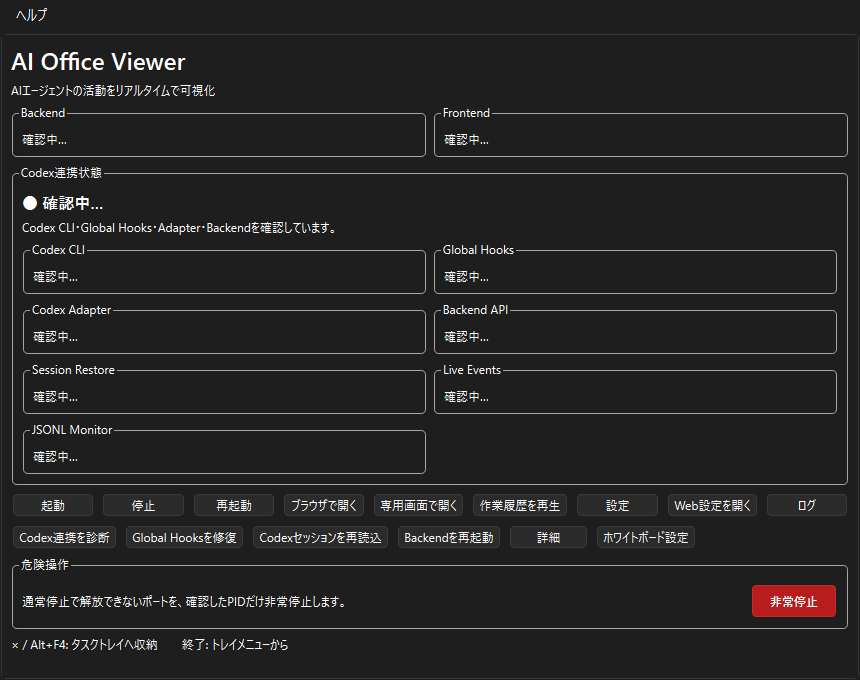

AI Office Viewer Manager
AI Office Viewer本体を起動・停止・監視する管理画面です。
{kind=link}

状態表示
| 表示 | 意味 |
|---|---|
| Backend | AI Office Viewerの内部処理を担当するサーバーです。Portable版ではViewerの静的画面もBackendから配信します。 |
| Frontend | オフィス画面を表示する画面側サービスの状態です。Portable版では独立したFrontendプロセスではなく、Backendの配信状態として確認されます。 |
「確認中…」「STARTING」の間は操作を繰り返さず数秒待ちます。「RUNNING」または正常表示になれば利用できます。エラー時はトラブル対応へ進みます。
主な操作
- 起動
- BackendとViewer画面を利用できる状態にします。完了するまで数秒待ってください。
- 停止
- 通常の終了方法です。処理中にManagerを強制終了せず、停止完了まで待ちます。
- 再起動
- 表示が更新されない、設定を反映したい、Backendが不調な時に全体を起動し直します。通常利用で頻繁に使う必要はありません。
- ブラウザで開く
- 既定ブラウザの通常タブでViewerを開きます。URLバーやタブが表示されます。
- 専用画面で開く
- EdgeまたはChromeをアプリ表示で起動し、タブやURLバーのない専用ウィンドウでViewerを開きます。Backendの起動を確認してから開かれます。
- 作業履歴を再生
- Replay Modeを開きます。
- 設定
- 会社名、オーナー名、時計、メインAI名、ポート、ブラウザ表示、セッション復元、終了時動作を設定します。
- Web設定を開く
- Viewerの設定画面を直接開きます。オーナー画像やReplay設定もここで変更します。
- ログ
- Backend・Frontend・Managerの最近のログを確認します。
専用画面の制限
- Microsoft EdgeまたはGoogle Chromeが必要です。
- 起動に数秒かかる場合があります。起動処理中はもう一度押さないでください。
- ブラウザや企業PCのポリシーによって利用できない場合は「ブラウザで開く」を使います。
- 専用表示のウィンドウは再利用または前面表示される場合があります。
Codex連携状態と補助操作
Codex CLI、Global Hooks、Codex Adapter、Backend API、Session Restore、Live Events、JSONL Monitorをまとめて確認できます。
- Codex連携を診断
- 連携の詳しい状態を再確認します。
- Global Hooksを修復
- Global Hooksが未設定またはエラーの時に、AI Office Viewer用の登録を修復します。既存の他のHooksを保持する方式です。
- Codexセッションを再読込
- 開始済みのCodexセッションをもう一度探します。完全な会話履歴を復元する機能ではありません。
- Backendを再起動
- Viewer全体ではなく内部処理だけを起動し直します。Backend API未接続などの時に使います。
- 詳細
- 診断結果と推奨対処を表示します。
- ホワイトボード設定
- Viewerのホワイトボード設定を直接開きます。
非常停止
「非常停止」は通常停止で解放できないポートが残った場合だけ使う危険操作です。設定済みポートを占有しているPID（Windows上の処理番号）を再確認し、選択したプロセスを強制停止します。通常は「停止」→数秒待機→「再起動」の順を優先してください。
タスクトレイとManager終了
ウィンドウの×ボタンまたはAlt+F4では、Managerは終了せずタスクトレイへ収納されます。トレイアイコンのメニューから、Managerを開く、起動、停止、再起動、Codexセッションを再読込、ブラウザ/専用画面を開く、Web設定、Replay、ホワイトボード設定、非常停止、設定、ログ、終了を実行できます。
完全終了はトレイメニューの「終了」を使います。「Manager終了時にAI Office Viewerも停止する」が有効なら、停止確認後に終了します。
このマニュアルを開く
Manager上部の「ヘルプ」→「利用者マニュアル」を選びます。Web上の最新版をOSの既定ブラウザで開きます。ヘルプ表示にはインターネット接続が必要ですが、この操作でBackendやFrontendを起動・停止することはありません。